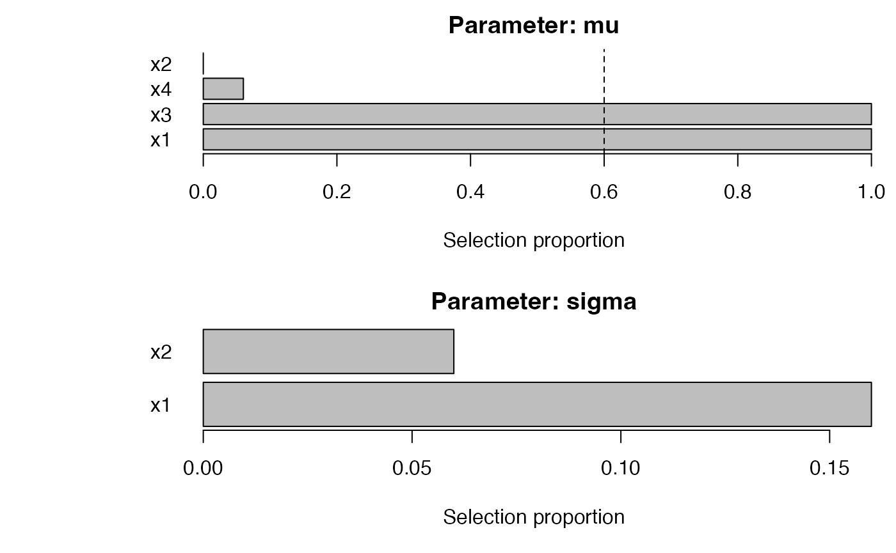
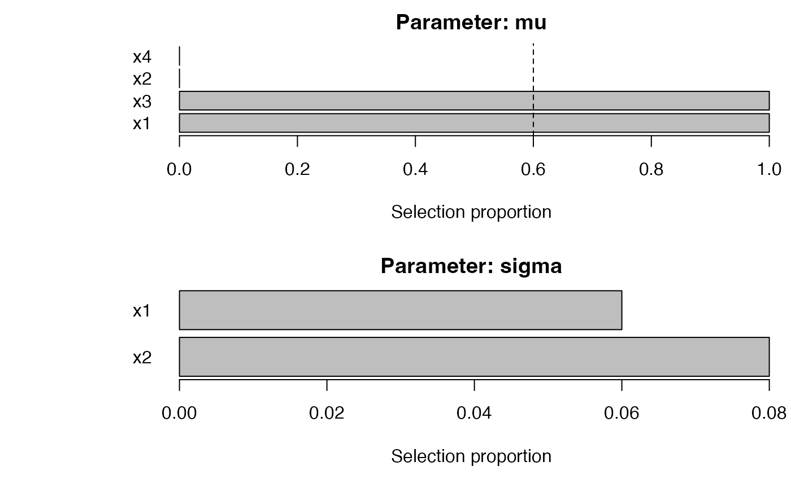
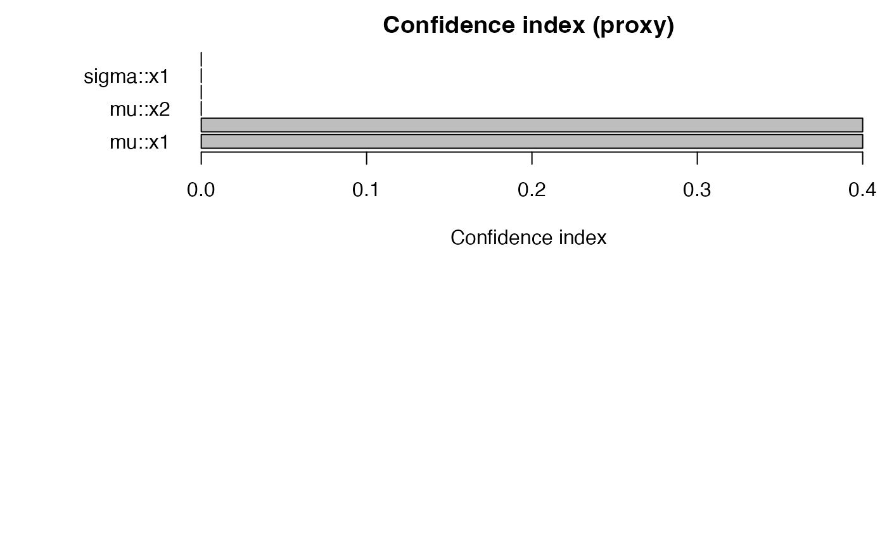
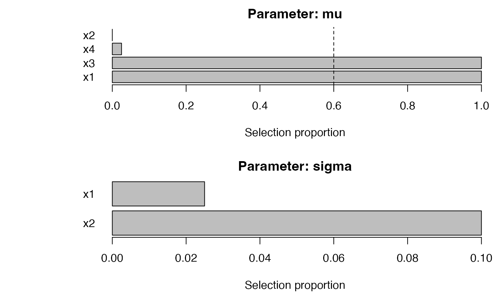
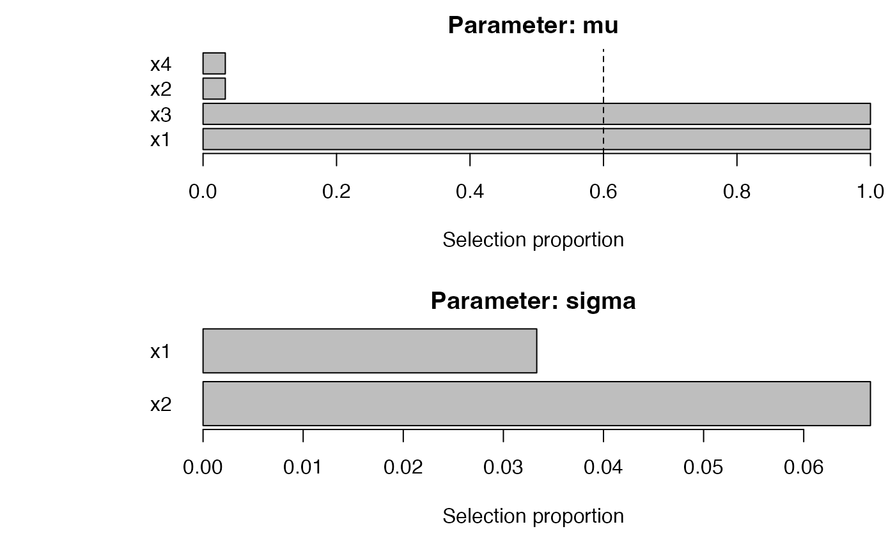
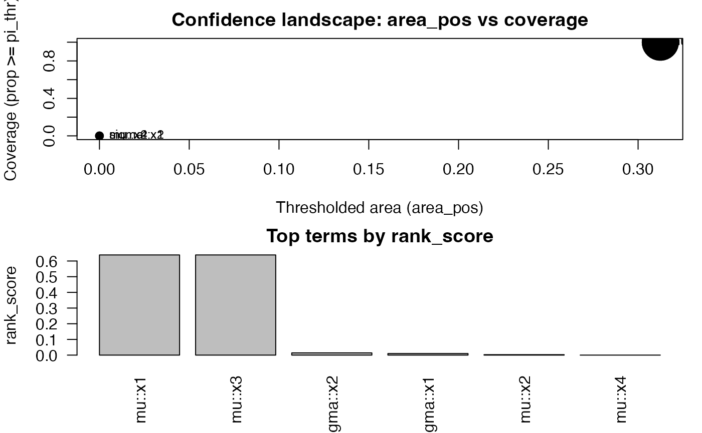
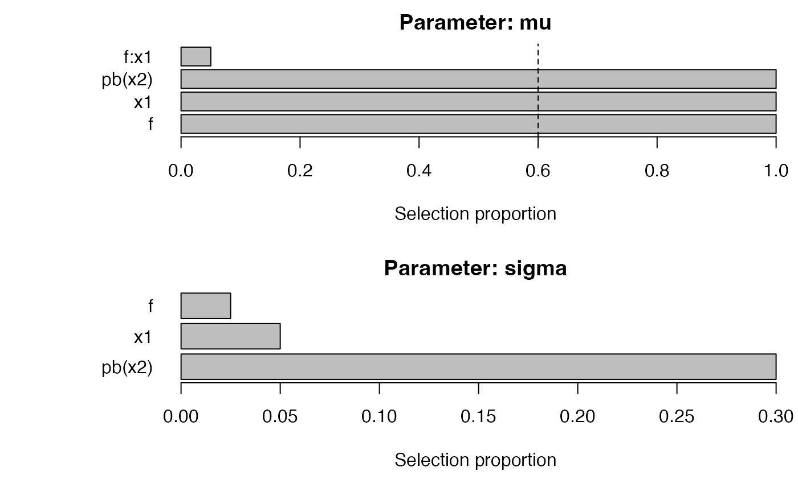
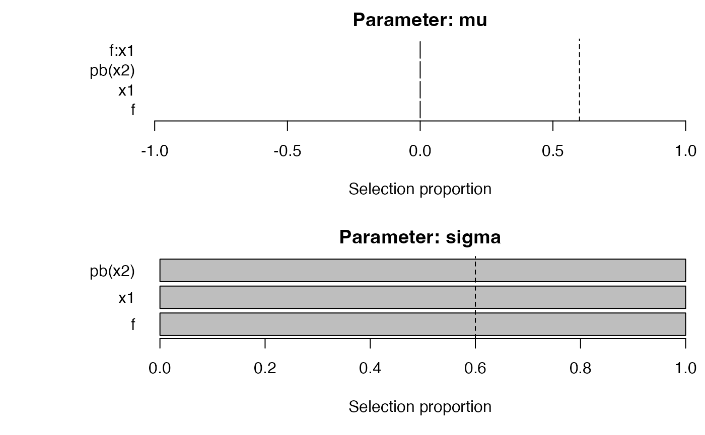

This vignette compares: plain sb_gamlss, the
SelectBoost-integrated SelectBoost_gamlss, grid-based
sb_gamlss_c0_grid + autoboost_gamlss, and the
lightweight fastboost_gamlss.
## Loading required package: splines## Loading required package: gamlss.data##
## Attaching package: 'gamlss.data'## The following object is masked from 'package:datasets':
##
## sleep## Loading required package: gamlss.dist## Loading required package: nlme## Loading required package: parallel## ********** GAMLSS Version 5.5-0 **********## For more on GAMLSS look at https://www.gamlss.com/## Type gamlssNews() to see new features/changes/bug fixes.##
## Attaching package: 'SelectBoost.gamlss'## The following object is masked from 'package:base':
##
## %||%
set.seed(1)
n <- 500
x1 <- rnorm(n); x2 <- rnorm(n); x3 <- rnorm(n); x4 <- rnorm(n)
mu <- 0.5 + 1.2*x1 - 0.8*x3
y <- gamlss.dist::rNO(n, mu = mu, sigma = 1)
dat <- data.frame(y, x1, x2, x3, x4)
# Baseline
b0 <- sb_gamlss(
y ~ 1, data = dat, family = gamlss.dist::NO(),
mu_scope = ~ x1 + x2 + x3 + x4, sigma_scope = ~ x1 + x2,
B = 50, pi_thr = 0.6, pre_standardize = TRUE, trace = FALSE
)## GAMLSS-RS iteration 1: Global Deviance = 1453.571
## GAMLSS-RS iteration 2: Global Deviance = 1453.571
plot_sb_gamlss(b0)
# SelectBoost integration (single c0)
sb <- SelectBoost_gamlss(
y ~ 1, data = dat, family = gamlss.dist::NO(),
mu_scope = ~ x1 + x2 + x3 + x4, sigma_scope = ~ x1 + x2,
B = 50, pi_thr = 0.6, c0 = 0.5, pre_standardize = TRUE, trace = FALSE
)## GAMLSS-RS iteration 1: Global Deviance = 1453.571
## GAMLSS-RS iteration 2: Global Deviance = 1453.571

# c0 grid + autoboost
g <- sb_gamlss_c0_grid(
y ~ 1, data = dat, family = gamlss.dist::NO(),
mu_scope = ~ x1 + x2 + x3 + x4, sigma_scope = ~ x1 + x2,
c0_grid = seq(0.2, 0.8, by = 0.2), B = 40, pi_thr = 0.6, pre_standardize = TRUE, trace = FALSE
)## | | | 0%GAMLSS-RS iteration 1: Global Deviance = 1453.571
## GAMLSS-RS iteration 2: Global Deviance = 1453.571
## | |================== | 25%GAMLSS-RS iteration 1: Global Deviance = 1453.571
## GAMLSS-RS iteration 2: Global Deviance = 1453.571
## | |=================================== | 50%GAMLSS-RS iteration 1: Global Deviance = 1453.571
## GAMLSS-RS iteration 2: Global Deviance = 1453.571
## | |==================================================== | 75%GAMLSS-RS iteration 1: Global Deviance = 1453.571
## GAMLSS-RS iteration 2: Global Deviance = 1453.571
## | |======================================================================| 100%
plot(g)
confidence_table(g) |> head()## parameter term conf_index cover
## 1 mu x1 0.4 1
## 5 mu x3 0.4 1
## 2 sigma x1 0.0 0
## 3 mu x2 0.0 0
## 4 sigma x2 0.0 0
## 6 mu x4 0.0 0
ab <- autoboost_gamlss(
y ~ 1, data = dat, family = gamlss.dist::NO(),
mu_scope = ~ x1 + x2 + x3 + x4, sigma_scope = ~ x1 + x2,
c0_grid = seq(0.2, 0.8, by = 0.2), B = 40, pi_thr = 0.6, pre_standardize = TRUE, trace = FALSE
)## | | | 0%GAMLSS-RS iteration 1: Global Deviance = 1453.571
## GAMLSS-RS iteration 2: Global Deviance = 1453.571
## | |================== | 25%GAMLSS-RS iteration 1: Global Deviance = 1453.571
## GAMLSS-RS iteration 2: Global Deviance = 1453.571
## | |=================================== | 50%## Warning in RS(): Algorithm RS has not yet converged## GAMLSS-RS iteration 1: Global Deviance = 1453.571
## GAMLSS-RS iteration 2: Global Deviance = 1453.571
## | |==================================================== | 75%GAMLSS-RS iteration 1: Global Deviance = 1453.571
## GAMLSS-RS iteration 2: Global Deviance = 1453.571
## | |======================================================================| 100%
attr(ab, "chosen_c0")## [1] 0.2
plot_sb_gamlss(ab)
# fastboost (lightweight)
fb <- fastboost_gamlss(
y ~ 1, data = dat, family = gamlss.dist::NO(),
mu_scope = ~ x1 + x2 + x3 + x4, sigma_scope = ~ x1 + x2,
B = 30, sample_fraction = 0.6, pi_thr = 0.6, pre_standardize = TRUE, trace = FALSE
)## GAMLSS-RS iteration 1: Global Deviance = 1453.571
## GAMLSS-RS iteration 2: Global Deviance = 1453.571
plot_sb_gamlss(fb)
Confidence Functionals (AUSC, Coverage, Quantiles, Weighted, Conservative)
We summarize the stability curves into single-number scores:
-
AUSC: normalized area under
across the
c0_grid. - Thresholded AUSC ( area): only counts confidence above the stability threshold.
-
Coverage: fraction of
c0where . - Quantiles (median/80th/90th): robust distributional summaries of stability.
- Weighted AUSC: apply a weight function to emphasize parts of the grid.
- Conservative AUSC: use Wilson lower bounds for before computing AUSC.
# Using the grid g created above
cf <- confidence_functionals(
g, pi_thr = 0.6,
q = c(0.5, 0.8, 0.9),
weight_fun = function(c0) (1 - c0)^2, # emphasize smaller c0
conservative = TRUE, B = 40, # use lower bounds
method = "trapezoid"
)
head(cf)## area area_pos w_area cover sup inf q50
## 1 0.912375461 0.3123755 0.912375461 1 0.91237546 0.91237546 0.912375461
## 3 0.912375461 0.3123755 0.912375461 1 0.91237546 0.91237546 0.912375461
## 6 0.048498421 0.0000000 0.063195402 0 0.07061092 0.00000000 0.055094902
## 5 0.037500329 0.0000000 0.037371182 0 0.05459420 0.02583556 0.039578888
## 2 0.006910189 0.0000000 0.002892637 0 0.01382038 0.00000000 0.006910189
## 4 0.000000000 0.0000000 0.000000000 0 0.00000000 0.00000000 0.000000000
## q80 q90 parameter term rank_score
## 1 0.91237546 0.91237546 mu x1 0.638662823
## 3 0.91237546 0.91237546 mu x3 0.638662823
## 6 0.07061092 0.07061092 sigma x2 0.014122183
## 5 0.04558501 0.05008960 sigma x1 0.010017921
## 2 0.01382038 0.01382038 mu x2 0.002764075
## 4 0.00000000 0.00000000 mu x4 0.000000000
plot(cf, top = 12, label_top = 8)
Grouped penalties for factors & splines
library(gamlss)
library(SelectBoost.gamlss)
set.seed(42)
n <- 500
f <- factor(sample(letters[1:3], n, TRUE))
x1 <- rnorm(n); x2 <- rnorm(n)
y <- gamlss.dist::rNO(n, mu = 0.3 + 1.2*x1 - 0.7*x2 + 0.5*(f=="c"), sigma = exp(0.1 + 0.2*(f=="b")))
dat <- data.frame(y, f, x1, x2)
# Stepwise baseline
fit_step <- sb_gamlss(
y ~ 1, data = dat, family = gamlss.dist::NO(),
mu_scope = ~ f + x1 + pb(x2) + x1:f,
sigma_scope = ~ f + x1 + pb(x2),
B = 40, pi_thr = 0.6, pre_standardize = TRUE, trace = FALSE
)## GAMLSS-RS iteration 1: Global Deviance = 1595.614
## GAMLSS-RS iteration 2: Global Deviance = 1595.614
# Group lasso for μ and sparse group lasso for σ
fit_grp <- sb_gamlss(
y ~ 1, data = dat, family = gamlss.dist::NO(),
mu_scope = ~ f + x1 + pb(x2) + x1:f,
sigma_scope = ~ f + x1 + pb(x2),
engine = "grpreg", engine_sigma = "sgl",
B = 40, pi_thr = 0.6, pre_standardize = TRUE, trace = FALSE
)## GAMLSS-RS iteration 1: Global Deviance = 2012.29
## GAMLSS-RS iteration 2: Global Deviance = 2010.758
## GAMLSS-RS iteration 3: Global Deviance = 2010.21
## GAMLSS-RS iteration 4: Global Deviance = 2009.983
## GAMLSS-RS iteration 5: Global Deviance = 2009.917
## GAMLSS-RS iteration 6: Global Deviance = 2009.897
## GAMLSS-RS iteration 7: Global Deviance = 2009.885
## GAMLSS-RS iteration 8: Global Deviance = 2009.875
## GAMLSS-RS iteration 9: Global Deviance = 2009.868
## GAMLSS-RS iteration 10: Global Deviance = 2009.862
## GAMLSS-RS iteration 11: Global Deviance = 2009.857
## GAMLSS-RS iteration 12: Global Deviance = 2009.853
## GAMLSS-RS iteration 13: Global Deviance = 2009.849
## GAMLSS-RS iteration 14: Global Deviance = 2009.847
## GAMLSS-RS iteration 15: Global Deviance = 2009.844
## GAMLSS-RS iteration 16: Global Deviance = 2009.843
## GAMLSS-RS iteration 17: Global Deviance = 2009.841
## GAMLSS-RS iteration 18: Global Deviance = 2009.84
## GAMLSS-RS iteration 19: Global Deviance = 2009.839
plot_sb_gamlss(fit_step)
plot_sb_gamlss(fit_grp)
selection_table(fit_step) |> head()## parameter term count prop
## 1 mu f 40 1.000
## 2 mu x1 40 1.000
## 3 mu pb(x2) 40 1.000
## 4 mu f:x1 2 0.050
## 5 sigma f 1 0.025
## 6 sigma x1 2 0.050
selection_table(fit_grp) |> head()## parameter term count prop
## 1 mu f 0 0
## 2 mu x1 0 0
## 3 mu pb(x2) 0 0
## 4 mu f:x1 0 0
## 5 sigma f 40 1
## 6 sigma x1 40 1Tuning & Group Knockoffs
# Tuning engines / penalties
cfgs <- list(
list(engine="stepGAIC"),
list(engine="glmnet", glmnet_alpha=1),
list(engine="grpreg", grpreg_penalty="grLasso", engine_sigma="sgl", sgl_alpha=0.9)
)
base <- list(
formula = y ~ 1, data = dat, family = gamlss.dist::NO(),
mu_scope = ~ f + x1 + pb(x2) + x1:f, sigma_scope = ~ f + x1 + pb(x2),
pi_thr = 0.6, pre_standardize = TRUE, sample_fraction = 0.7, parallel = "auto", trace = FALSE
)
tuned <- tune_sb_gamlss(cfgs, base_args = base, B_small = 30)## | | | 0%GAMLSS-RS iteration 1: Global Deviance = 1595.614
## GAMLSS-RS iteration 2: Global Deviance = 1595.614
## | |======================= | 33%GAMLSS-RS iteration 1: Global Deviance = 1595.614
## GAMLSS-RS iteration 2: Global Deviance = 1595.614
## | |=============================================== | 67%GAMLSS-RS iteration 1: Global Deviance = 2012.29
## GAMLSS-RS iteration 2: Global Deviance = 2010.758
## GAMLSS-RS iteration 3: Global Deviance = 2010.21
## GAMLSS-RS iteration 4: Global Deviance = 2009.983
## GAMLSS-RS iteration 5: Global Deviance = 2009.917
## GAMLSS-RS iteration 6: Global Deviance = 2009.897
## GAMLSS-RS iteration 7: Global Deviance = 2009.885
## GAMLSS-RS iteration 8: Global Deviance = 2009.875
## GAMLSS-RS iteration 9: Global Deviance = 2009.868
## GAMLSS-RS iteration 10: Global Deviance = 2009.862
## GAMLSS-RS iteration 11: Global Deviance = 2009.857
## GAMLSS-RS iteration 12: Global Deviance = 2009.853
## GAMLSS-RS iteration 13: Global Deviance = 2009.849
## GAMLSS-RS iteration 14: Global Deviance = 2009.847
## GAMLSS-RS iteration 15: Global Deviance = 2009.844
## GAMLSS-RS iteration 16: Global Deviance = 2009.843
## GAMLSS-RS iteration 17: Global Deviance = 2009.841
## GAMLSS-RS iteration 18: Global Deviance = 2009.84
## GAMLSS-RS iteration 19: Global Deviance = 2009.839
## | |======================================================================| 100%
tuned$best_config## $engine
## [1] "stepGAIC"
# Approximate group knockoffs for mu
sel_mu <- NULL
if (requireNamespace("knockoff", quietly = TRUE)) {
sel_mu <- tryCatch(
knockoff_filter_mu(dat, response = "y", mu_scope = ~ f + x1 + pb(x2), fdr = 0.1),
error = function(e) {
cat("Knockoff filter failed:", conditionMessage(e), "— skipping example.\n")
NULL
}
)
} else {
cat("Package 'knockoff' not installed; skipping knockoff example.\n")
}## Knockoff filter failed: non-numeric argument to binary operator — skipping example.
if (!is.null(sel_mu)) sel_mu